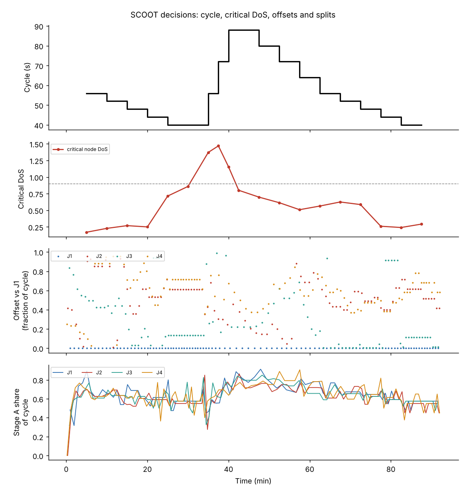
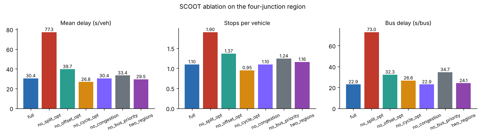

Three optimisers, one region
The split, offset and cycle optimisers each work on a different time scale, and each makes only small changes. Together they turn the link models into coordinated timings for a whole region. This level takes each one apart, then runs everything on a four-junction region in SUMO.
Regions, nodes and double cycling
A region is a set of nodes that run on one common cycle time, so their offsets mean something. Region boundaries are drawn where links are long enough that coordination no longer matters. Unlike SCATS, SCOOT regions do not marry and divorce on line; the boundaries are part of the design.
A lightly loaded node, often a pedestrian crossing, can be double cycled: it runs two cycles for every region cycle, so pedestrians wait about half as long while the node still keeps step with its neighbours. SCOOT allows it only when the node stays under its saturation target at the shorter cycle.
The split optimiser
A few seconds before every scheduled stage change, SCOOT asks one question: should this change happen 4 seconds earlier, on time, or 4 seconds later? For each option the model predicts the degree of saturation of every link in the stage that is ending and the stage that is starting, and the option with the lowest maximum DoS wins. Minimum greens are always respected.
The chosen move is applied to this cycle only (a temporary change). A smaller permanent change of 1 second is made to the stored plan in the same direction, so the plan drifts towards the right split without reacting to a single noisy cycle. Most decisions are "keep": about two thirds in TRL's original description.
Split optimiser explorer
Two stages, cycle 60 s, intergreens 5 s. Demand changes; watch temporary and permanent changes.| Option | Green A / B (s) | DoS A | DoS B | Max |
|---|
The offset optimiser
Once per cycle, at a fixed point in each node's cycle, SCOOT asks whether the whole node should run 4 seconds earlier, on time, or 4 seconds later. For each option it re-runs the queue model on every link into the node and every link out of it to a neighbour, using the cyclic flow profiles, and adds up the performance index (delay plus weighted stops). The lowest wins. Because the step is small and taken every cycle, the offset climbs down the PI curve to a good coordination, and keeps tracking it as traffic changes.
Offset optimiser
Two nodes 300 m apart. The curve is PI for every possible offset; SCOOT only ever looks ±4 s around where it is.The cycle optimiser
Every 5 minutes, or every 2.5 minutes while cycle times are rising, SCOOT reviews the region cycle. It finds the critical node, the one whose busiest link needs the longest cycle, and keeps it at or below about 90% DoS: if any link is above target the cycle increases; if all are comfortably below it can decrease. Steps are 4, 8 or 16 seconds, larger at longer cycles, within the region's minimum and maximum. Within that limit the lab controller also prefers the cycle with the lower predicted performance index, so it does not run longer cycles than the traffic needs.
Cycle optimiser through a peak
One critical node with 10 s lost time. Demand rises, holds, then falls.Congestion, exit blocking and gating
When a queue reaches back over the upstream detector, the detector sits occupied and the count no longer reflects demand. SCOOT measures this as the share of the cycle the detector is occupied by standing traffic. The engineer sets a congestion importance factor for each link, which raises that link's weight in the split optimiser so a congested link gets green before its queue blocks the junction upstream. Congestion offsets can also be set for links that must not block back. Later versions detect exit blocking, where a link cannot discharge because the road beyond it is full.
Gating protects a critical bottleneck. When a critical link's saturation passes a threshold, SCOOT holds back traffic on chosen gate links further out, where queues do no harm, so the bottleneck keeps flowing instead of locking up.
Gating a bottleneck
A short critical link (room for 25 vehicles) is fed by a long gate link. Demand peaks for 20 minutes.Bus priority: extensions and recalls
Buses are detected by selective vehicle detectors or by automatic vehicle location. SCOOT then uses two tools. An extension holds the current green a few seconds so a bus about to arrive gets through. A recall brings the bus's stage in early by cutting the current stage short, after its minimum green. After either, SCOOT recovers: the following stages are adjusted so the plan returns to its optimised timings within a cycle or two. The authority given to buses can be weighted by how important priority is on that route.
Extension or recall?
Bus on the main road (stage A). Cycle 80 s: A 40 s, B 30 s, intergreens 5 s. Maximum extension 12 s.The wider SCOOT system
| Feature | What it does | Since |
|---|---|---|
| Bus priority (AVL / SVD) | extensions and recalls for detected buses | 3.1 (1995) |
| ASTRID | database of SCOOT data; historic profiles feed fault substitution and peak warning | 3.1 |
| INGRID | real-time incident detection from SCOOT detectors and ASTRID history | 3.1 |
| Emissions estimates | CO, CO2, NOx, particulates, VOC by link, node or region | 4.0 (1997) |
| Gating, double cycling, filtering | congestion management and low-demand efficiency | 4.x |
| MC3: exit blocking, congestion supervisor | better behaviour in oversaturation | 5.x (2006-08) |
| Pedestrian priority, low-flow features | variable invitation to cross, ghost staging, node cycle independence | 6.0 (2010) |
| SCOOT 7 | cooperative data (GLOSA), pedestrian SCOOT, multiple split optimisation, loop failure logic, cloud-first | 7.0 (2020) |
Several cities are now moving to newer systems, for example Transport for London's FUSION. The principles on this page, model-based prediction and small incremental optimisation, carry over to them.
The full system on a SUMO region
Four junctions 300 m apart form one SCOOT region. Demand starts low, then comes a 30-minute eastbound peak, a westbound peak, and low traffic again, with buses every 4 minutes each way. All the mechanisms above run together.
Lab A1: SCOOT vs fixed vs actuated on the region
python advanced/01_corridor_scoot.py # add --gui to watch
Lab A2: ablation, switch one mechanism off at a time
python advanced/02_ablation_study.py
Without the split optimiser delay more than doubles (77 s against 30 s): the initial 60/40 split cannot serve tidal peaks. Without offset optimisation delay rises to 40 s, and without bus priority buses lose 12 s each. Two surprises are worth discussing. Freezing the cycle at 60 s did slightly better (26.8 s): in the first peak the optimiser stretched the cycle to 88 s and then brought it down only 8 s every 5 minutes, so the region ran longer cycles than this demand needed. That is exactly why engineers tune each region's maximum cycle. Congestion importance made no difference, because on this network queues never reached the upstream detectors.
Check your understanding
Next: Mastery, where these mechanisms become research questions.